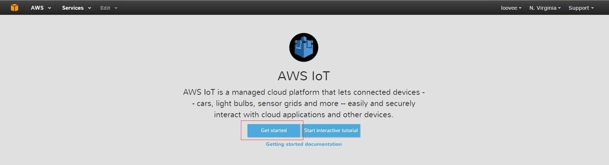

Main articles: Start here Grove IoT Starter Kits Powered by AWS , Intel Edison
Designed for expert makers, entrepreneurs, and industrial IoT companies, the Intel Edison module provides easier prototyping with a fully open source hardware and software development environment. It supports Wi-Fi and BLE 4.0 connectivity. This kit contains eleven selective Grove sensors and actuators for you to track indoor environment as well as to create smart-house applications.


| Board/Part | Qty | Documentation |
|---|---|---|
| Intel® Edison for Arduino | 1 | Read Here |
| Base Shield | 1 | Read Here |
| Grove - Temperature&Humidity Sensor (High-Accuracy & Mini) | 1 | Read Here |
| Grove - Moisture Sensor | 1 | Read Here |
| Grove - Light Sensor | 1 | Read Here |
| Grove - UV Sensor | 1 | Read Here |
| Grove - PIR Motion Sensor | 1 | Read Here |
| Grove - Encoder | 1 | Read Here |
| Grove - Button | 1 | Read Here |
| Grove - LCD RGB Backlight | 1 | Read Here |
| Grove - Relay | 1 | Read Here |
| Grove - Servo | 1 | Read Here |
| Grove - Buzzer | 1 | Read Here |
| USB Cable; 480mm-Black | 1 | |
| USB Wall Power Supply | 1 |


At this section you can also refer to the Beagle Bone wiki for another way to create a thing and finish the left tasks. The difference is Beagle Bone didn’t use AWS CLI tool to Get Certifications.
Before you begin
Install AWS CLI
The AWS CLI is a way to manage your AWS services from your board. You need this first in order to download the SDK.
1.First, you need to install pip (Python package manager):
curl https://bootstrap.pypa.io/ez_setup.py -o - | python easy_install pip
2.Next, install the AWS CLI with pip:
pip install awscli
Note: In order to view the help files ("aws iot help") you need to install Groff and a non-BusyBox version of less.
3.For Groff:
wget http://ftp.gnu.org/gnu/groff/groff-1.22.3.tar.gz tar -zxvf groff-1.22.3.tar.gz cd groff-1.22.3 ./configure make make install export PATH=$PATH:/usr/local/bin/ cd ~
4.For Less: First rename the old version of less
mv /usr/bin/less /usr/bin/less-OLD Then install the new version of less wget http://www.greenwoodsoftware.com/less/less-458.zip unzip less-458.zip cd less-458 chmod 777 * ./configure make make install cd ~
5.To make sure everything has installed correctly, run the iot help file:
aws iot help
Get AWS credentials:
At this point, you should have AWS CLI installed. And the Access ID and Key you have download before, configure AWS and enter the ID and Key with:
aws configure
1.First create a folder to store your certificates in:
$ mkdir aws_certs $ cd aws_certs
2.Generate a private key with open ssl:
openssl genrsa -out privateKey.pem 2048 openssl req -new -key privateKey.pem -out cert.csr
3.Fill out the fields with your info.
4.Run the following to activate the certificate:
aws iot create-certificate-from-csr --certificate-signing-request file://cert.csr --set-as-active > certOutput.txt
5.Run the following to save the certificate into a cert.pem file:
aws iot describe-certificate --certificate-id <certificate ID> --output text --query certificateDescription.certificatePem > cert.pem
NOTE: Replace <certificate ID> with the ID stored in the "certificateId" field in certOutput.txt. To view the file enter: more certOutput.txt
6.Create a Json policy document for AWS IoT SDK:
{
"Version": "2012-10-17",
"Statement": [{
"Effect": "Allow",
"Action":["iot:*"],
"Resource": ["*"]
}]
}
7.First enter:
aws iot create-policy --policy-name PubSubToAnyTopic --policy-document file://policy.doc
Notice:The policy name can be anything.
8.After that a policy and a certificate can be shown on your AWS console.
9.Then attach the policy to the certificate with:
aws iot attach-principal-policy --principal <principal arn> --policy-name "PubSubToAnyTopic"
NOTE: replace <principal arn> with the value stored in "certifcateArn" in the outputCert.txt file.
10.You should see your certificate has attach to your policy.
Use MQTT to subscribe and publish to AWS
curl https://www.symantec.com/content/en/us/enterprise/verisign/roots/VeriSign-Class%203-Public-Primary-Certification-Authority-G5.pem > rootCA.pem
1.Create a nodejs project
cd ~ mkdir aws_nodejs && cd aws_nodejs npm init npm install --save aws-iot-device-sdk touch main.js
2.Copy and save demo code to main.js
vi main.js
// Plug Grove - Relay to base shield port D2 // Plug Grove - Temperature&Huminity(High quality) to i2c port var sensor1 = require('jsupm_th02'); var th02 = new sensor1.TH02(); var sensor2 = require('jsupm_grove'); var relay = new sensor2.GroveRelay(2); // Simulate device value var temp = 24.00; var humi = 50; var relayState = false; var reported_state = {"Temperature":temp, "Humidity": humi, "RelayState": relayState}; // // Client token value returned from thingShadows.update() operation//app deps const thingShadow = require('./node_modules/aws-iot-device-sdk/thing');// Plug Grove - Relay to base shield port D2 // Plug Grove - Temperature&Huminity(High quality) to i2c port var sensor1 = require('jsupm_th02'); var th02 = new sensor1.TH02(); var sensor2 = require('jsupm_grove'); var relay = new sensor2.GroveRelay(2); var awsIot = require('aws-iot-device-sdk'); var thingShadows = awsIot.thingShadow({ keyPath: '/home/root/aws_certs/privateKey.pem', certPath: '/home/root/aws_certs/cert.pem', caPath: '/home/root/aws_certs/rootCA.pem', clientId: 'myAwsClientId', region: 'us-east-1' }); // Simulate device value var temp = 24.00; var humi = 50; var relayState = false; // // Client token value returned from thingShadows.update() operation // var clientTokenUpdate; var thingName = "EdisonDemo"; thingShadows.on('connect', function() { thingShadows.register(thingName); console.log(thingName + ' registering...'); setInterval(function(){ readSensor(sendData); }, 5000); }); thingShadows.on('status', function(thingName, stat, clientToken, stateObject) { console.log(' received '+stat+' on '+thingName+': '+ JSON.stringify(stateObject)); // // These events report the status of update(), get(), and delete() // calls. The clientToken value associated with the event will have // the same value which was returned in an earlier call to get(), // update(), or delete(). Use status events to keep track of the // status of shadow operations. // }); thingShadows.on('delta', function(thingName, stateObject) { console.log(' received delta on '+thingName+': '+ JSON.stringify(stateObject)); if(stateObject.state.RelayState == true){ relay.on(); console.log('Relay is on.'); } else if(stateObject.state.RelayState == false) { relay.off(); console.log('Relay is off.'); } }); thingShadows.on('timeout', function(thingName, clientToken) { console.log(' received timeout on '+thingName + ' with token: '+ clientToken); // // In the event that a shadow operation times out, you'll receive // one of these events. The clientToken value associated with the // event will have the same value which was returned in an earlier // call to get(), update(), or delete(). // }); function readSensor(callback){ temp = th02.getTemperature(); humi = th02.getHumidity(); relayState = relay.isOn(); callback(); }; function sendData(){ var reported_state = {"Temperature":temp, "Humidity": humi, "RelayState": relayState}; var relayTH02State = {"state":{desired: reported_state}}; // Use desired attribute can receive delta // More info refer to http://docs.aws.amazon.com/iot/latest/developerguide/thing-shadow-mqtt.html#update-pub-sub-message clientTokenUpdate = thingShadows.update(thingName, relayTH02State); if (clientTokenUpdate === null) { console.log('update shadow failed, operation still in progress'); } };
3.start nodejs application
node main.js

4.Watch data on AWS console
5.Update shadow to change relay state
6.If uploading succeed Grove - Relay will turn on.
Copyright (c) 2008-2016 Seeed Development Limited (www.seeedstudio.com / www.seeed.cc)